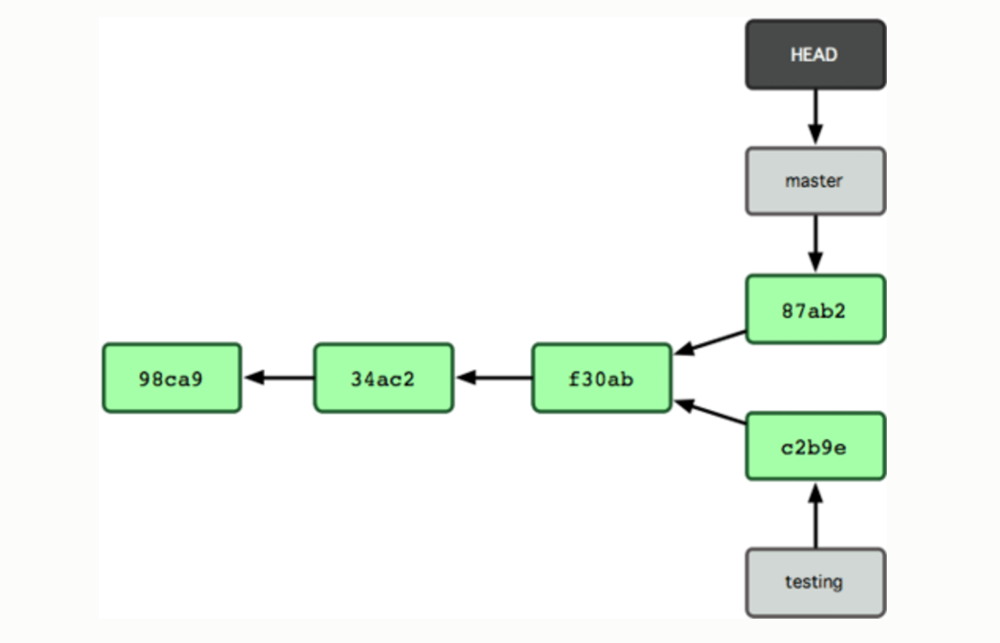

class: center, middle # Version Control with Git # Part I ### Tutorial for the SIAM CSE Conference, 2017 http://meetings.siam.org/sess/dsp_programsess.cfm?SESSIONCODE=61491 --- # .blue[What is git?] - Distributed version control (no central server needed) - Easy to take a snapshot of current state of all tracked files - Differences are efficiently stored - Easy to revert to earlier version, compare between versions ## .blue[Also facilitates collaboration:] - With yourself on multiple computers (and for backup) - With others (see Part 2) --- name: install ## .blue[Install git] .red[Try this:] At the command line, ```bash git config --list ``` If you don't have `git` installed, see for example: - [Installing Git](https://git-scm.com/book/en/v2/Getting-Started-Installing-Git) from the [Git Book](https://git-scm.com/). .red[Note:] This tutorial uses git from the command line. <br> On Mac OSX you also need Xcode command line tools installed. Other GUI-based tools also exist. --- template:install ### .red[Configure git:] (only need to do this once) ```bash git config --global user.name "John Doe" git config --global user.email johndoe@example.com git config --global core.editor vim ``` See: http://swcarpentry.github.io/git-novice/02-setup/ --- ## .blue[Documentation] - At the command line, try for example: `git help commit` - [Git Book](https://git-scm.com/) <p> </p> ## .blue[Tutorials] Many exist on the web if you search, for example: - [From the Git Book](https://git-scm.com/docs/gittutorial) - From Software Carpentry: http://swcarpentry.github.io/git-novice/ We will follow this! --- name: gitinit # .blue[Turn any directory into a git repository:] ```bash cd path/to/directory git init ``` This creates a "hidden" directory `.git` containing the database. --- template: gitinit <p> </p> Then use various commands to tell which files to track, <br> take a new "snapshot", etc., e.g. ```bash git add file1.txt git commit -m "commit message" ``` <br> (We will do this later) --- name: clone-this-repo # .blue[Or start by cloning an existing repository:] For example, get these slides via: ```bash git clone https://github.com/uwescience/git-tutorials-siamcse2017 cd git-tutorials-siamcse2017 ls -a # list files, including those "hidden" to see .git ``` The clone contains all the history! ```bash git log ``` prints all the commits and the commit messages --- template: clone-this-repo ### .red[Try this now.] Then open `git-tutorials-siamcse2017/slides/part1.html`<br> if you want to view these slides in your browser. --- # .blue[Git commit hash codes] Every time you do a `git commit` you create a new snapshot of the state of all tracked files. Each commit has a "name" that is a unique 40-character hexadecimal string. #### .blue[Example:] Scrolling through `git log` to the beginning shows the first 2 commits: ```bash commit 6793f268b9b8c8b7151c7640291d4058a3061214 Author: Randy LeVeque <rjl@uw.edu> Date: Sun Jan 29 11:20:27 2017 -0800 Added CC-BY license commit 02eba6080c561fea283a5a39c24b000535f1b393 Author: Randy LeVeque <rjl@uw.edu> Date: Sun Jan 29 11:14:44 2017 -0800 Initial commit with minimal README ``` The first 7 characters is usually enough to identify a commit, e.g. `02eba60`. --- name: revert1 # .blue[Reverting to a previous version] #### .red[Try this:] ```bash git checkout 02eba60 ``` This restores the repository to the state after the first commit, when only one file `README.md` existed. .red[(confirm this via `ls -a`)] ??? Discuss HEAD and detached HEAD --- template: revert1 <br> #### .blue[To get back to the most recent snapshot:] ```bash git checkout master ``` (We are on the `master` branch, more about branches later) .red[Try this and confirm that all files are restored.] ??? Say something about "detached HEAD" message to lead into next slide ---  - HEAD refers to the commit that is currently checked out - Usually at the tip of a branch - Otherwise HEAD is "detached" - https://git-scm.com/book/en/v1/Git-Branching-What-a-Branch-Is --- ## .blue[Git diff] Compare files between two different snapshots, e.g. ```bash git diff --stat 02eba60 master # show which files changed git diff 02eba60 master -- README.md # show diff in particular file ``` If you have made changes to a file but not committed the changes, then you can see the difference in file from the snapshot HEAD via ```bash git diff README.md ``` ## .blue[Git status] Determine if there are changes in your working directory via ```bash git status ``` --- # .blue[Staging files for commit] <img src="git-stage.png" width=600> [Figure from https://git-scm.com/about/staging-area] --- Illustrate checking out a single file Reverting this file with a new commit --- # .blue[Create a new repository] Now let's try making a new repository. From here we will follow: - http://swcarpentry.github.io/git-novice/03-create/ --- # .blue[Setting up a remote repository] To list remotes: ```bash git remote -v ``` To add a new remote: ```bash git remote add <name> <url> ``` The `<url>` could be: - another clone on the same machine - a clone on a server or your desktop - a repository on Github, Bitbucket, Gitlab, etc. --- Cloud hosting sites: - Popular options: Github, Bitbucket, Gitlab, - Public vs. private - Provide issue trackers, wiki pages - Pull requests, forks - Open source projects -- examples --- # To do: (More slides needed to guide demos) - Illustrate `git init, git add, git commit` - Illustrate `git status, git diff` - Explain difference between untracked, clean, unstaged, staged - Brief discussion of branches, remotes at end of Part 1? <!-- ### End of slides ### -->